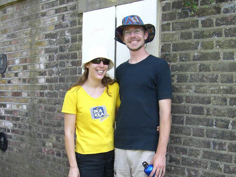
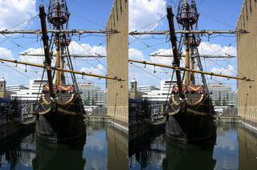
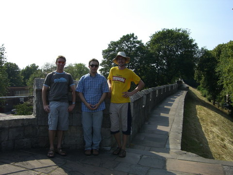
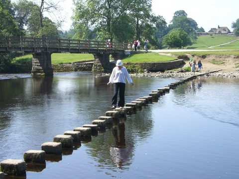
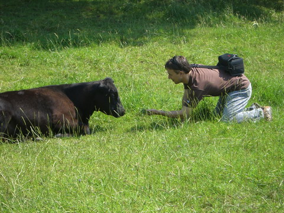
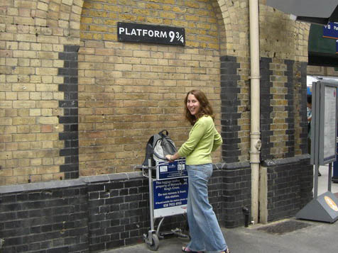
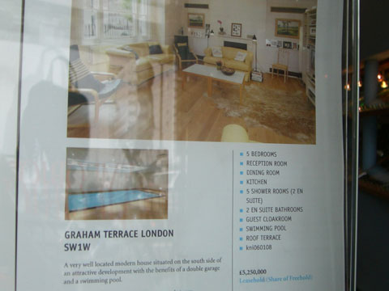
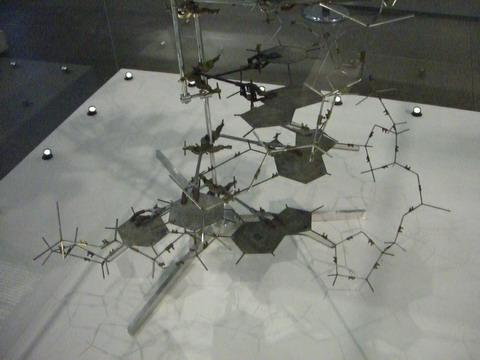

england
london

here's ren and i on the meridian line near jame and adeles place. east meets west indeed.

nearby is this boat. remember those 3d eye pictures, give it a go.

while adele was off working (ahhh, the joys of being unemployed) we went up to leeds to visit paul and jacinta.

lots of cool bridges to cross

paul became one with nature (though we had to visit him for the next week in hospital (just kidding))
here's jacinta taking a picture of me taking a picture of her taking a picture of me...

ren did a day trip to hogwarts

feel like buying a small apartment? what about this one, not too far from hyde park, enough room for visitors and the price, quite affordable really..

one of the best things about london is it's museums, most of which are free. here for example is the original dna model. how cool is that?